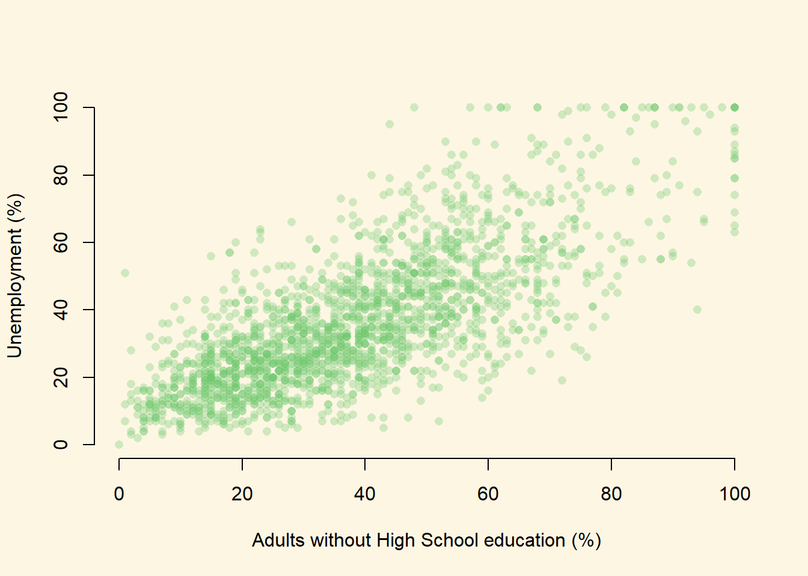
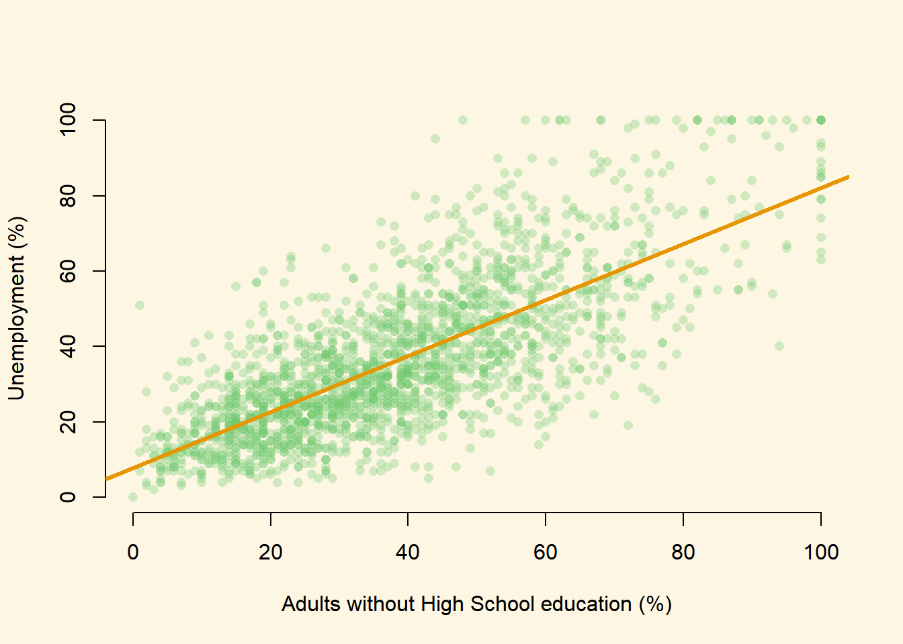
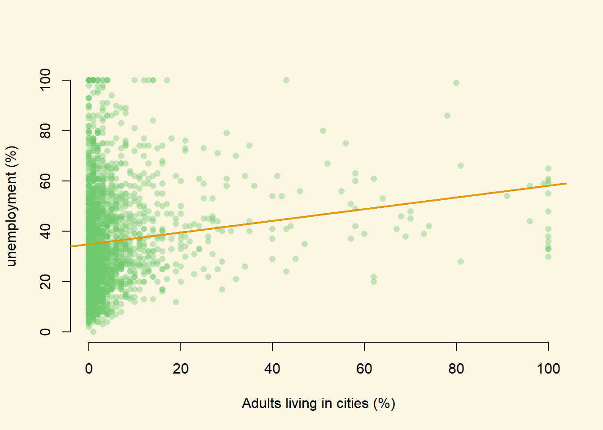

Chapter 6 Bivariate linear regression models
6.1 Seminar
rm(list = ls())6.1.1 Packages
We will need to install a package in this week’s seminar. Packages are like apps for your phone. R comes with some core functionality and allows users to add functionality. These add-ons are called packages. We first need to install a package (but only once). Every time we start R, we need to load the package.
To install a package, we write install.packages("package.name"). To load a package, we write library(package.name).
This week’s package is called texreg and it makes it easy to produce publication quality output from our regression models. We’ll discuss this package in more detail as we go along. For now let’s install the package and then load the package.
install.packages("texreg") # install only once
library(texreg) # load in the beginning of every R sessionWe will use a dataset collected by the US census bureau that contains several socioeconomic indicators. You can load the dataset directly from the internet.
dat <- read.csv("https://raw.githubusercontent.com/philippbroniecki/statistics1/master/data/communities.csv")We will be exploring the relationship between the unemployment rate and low education. The variable names for these variables are not terribly clear and so first we will rename these variables using the names() function and the which() function from last week.
names(dat) [1] "state" "county" "community"
[4] "communityname" "fold" "population"
[7] "householdsize" "racepctblack" "racePctWhite"
[10] "racePctAsian" "racePctHisp" "agePct12t21"
[13] "agePct12t29" "agePct16t24" "agePct65up"
[16] "numbUrban" "pctUrban" "medIncome"
[19] "pctWWage" "pctWFarmSelf" "pctWInvInc"
[22] "pctWSocSec" "pctWPubAsst" "pctWRetire"
[25] "medFamInc" "perCapInc" "whitePerCap"
[28] "blackPerCap" "indianPerCap" "AsianPerCap"
[31] "OtherPerCap" "HispPerCap" "NumUnderPov"
[34] "PctPopUnderPov" "PctLess9thGrade" "PctNotHSGrad"
[37] "PctBSorMore" "PctUnemployed" names(dat)[which(names(dat) == "PctUnemployed")] <- "UnemploymentRate"
names(dat)[which(names(dat) == "PctNotHSGrad")] <- "NoHighSchool"The first variable (UnemploymentRate) measures the proportion of citizens in each community who are unemployed. The second variable (NoHighSchool) measures the proportion of citizens in each community who failed to finish high-school.
If we summarize these variables with the summary() function, we will see that they are both measured as proportions (they vary between 0 and 1):
summary(dat$UnemploymentRate) Min. 1st Qu. Median Mean 3rd Qu. Max.
0.0000 0.2200 0.3200 0.3635 0.4800 1.0000 summary(dat$NoHighSchool) Min. 1st Qu. Median Mean 3rd Qu. Max.
0.0000 0.2300 0.3600 0.3833 0.5100 1.0000 It will be a little easier to interpret the regression output if we convert these to percentages rather than proportions. We can do this with the following lines of code:
dat$UnemploymentRate <- dat$UnemploymentRate*100
dat$NoHighSchool <- dat$NoHighSchool*100We can begin by drawing a scatterplot with the percentage of unemployed people on the y-axis and the percentage of adults without high-school education on the x-axis.
plot(
y = dat$UnemploymentRate,
x = dat$NoHighSchool,
xlab = "Adults without High School education (%)",
ylab = "Unemployment (%)",
bty = "n",
pch = 16,
col = rgb(red = 110, green = 200, blue = 110, alpha = 80, maxColorValue = 255)
)
From looking at the plot, what is the association between the unemployment rate and lack of high-school level education?
In order to answer that question empirically, we will run a linear regression using the lm() function in R. The lm() function needs to know a) the relationship we’re trying to model and b) the dataset for our observations. The two arguments we need to provide to the lm() function are described below.
| Argument | Description |
|---|---|
formula |
The formula describes the relationship between the dependent and independent variables, for example dependent.variable ~ independent.variable In our case, we’d like to model the relationship using the formula: UnemploymentRate ~ NoHighSchool |
data |
This is simply the name of the dataset that contains the variable of interest. In our case, this is the merged dataset called communities. |
For more information on how the lm() function works, type help(lm) in R.
model1 <- lm(UnemploymentRate ~ NoHighSchool, data = dat)The lm() function has modeled the relationship between PctUnemployed and NoHighSchool and we’ve saved it in an object called model1. Let’s use the summary() function to see what this linear model looks like.
summary(model1)
Call:
lm(formula = UnemploymentRate ~ NoHighSchool, data = dat)
Residuals:
Min 1Q Median 3Q Max
-42.347 -8.499 -1.189 7.711 56.470
Coefficients:
Estimate Std. Error t value Pr(>|t|)
(Intercept) 7.89520 0.64833 12.18 <0.0000000000000002 ***
NoHighSchool 0.74239 0.01496 49.64 <0.0000000000000002 ***
---
Signif. codes: 0 '***' 0.001 '**' 0.01 '*' 0.05 '.' 0.1 ' ' 1
Residual standard error: 13.52 on 1992 degrees of freedom
Multiple R-squared: 0.553, Adjusted R-squared: 0.5527
F-statistic: 2464 on 1 and 1992 DF, p-value: < 0.000000000000000226.1.1.1 Interpreting Regression Output
The output from lm() might seem overwhelming at first so let’s break it down one item at a time.
| # | Description |
|---|---|
The dependent variable, also sometimes called the outcome variable. We are trying to model the effects of NoHighSchool on UnemploymentRate so UnemploymentRate is the dependent variable. |
|
The independent variable or the predictor variable. In our example, NoHighSchool is the independent variable. |
|
 |
The differences between the observed values and the predicted values are called residuals. R produces a summary of the residuals. |
The coefficients for the intercept and the independent variables. Using the coefficients we can write down the relationship between the dependent and the independent variables as: UnemploymentRate = 7.8952023 + ( 0.7423853 * NoHighSchool ) This tells us that for each unit increase in the variable NoHighSchool, the UnemploymentRate increases by 0.7423853. |
|
 |
The p-value for each of the coefficients in the model. Recall that according to the null hypotheses, the value of the coefficient of interest is zero. The p-value tells us whether can can reject the null hypotheses or not. |
| The standard error estimates the standard deviation of the sampling distribution of the coefficients in our model. We can think of the standard error as the measure of precision for the estimated coefficients. | |
 |
The t statistic is obtained by dividing the coefficients by the standard error. |
| The R-squared and adjusted R-squared tell us how much of the variance in our model is accounted for by the independent variable. The adjusted R-squared is always smaller than R-squared as it takes into account the number of independent variables and degrees of freedom. |
Now let’s add a regression line to the scatter plot using the abline() function.
## First we run the same "plot" function as before
plot(
UnemploymentRate ~ NoHighSchool, data = dat,
xlab = "Adults without High School education (%)",
ylab = "Unemployment (%)",
frame.plot = FALSE,
pch = 16,
col = rgb(red = 110, green = 200, blue = 110, alpha = 80, maxColorValue = 255)
)
## Then we use the "abline" function to plot the regression line from our saved model object
abline(model1, lwd = 3,
col = rgb(red = 230, green = 150, blue = 0, alpha = 255, maxColorValue = 255))
We can see by looking at the regression line that it matches the coefficients we estimated above. For example, when NoHighSchool is equal to zero (i.e. where the line intersects the Y-axis), the predicted value for UnemploymentRate seems to be above 0 but below 10. This is good, as the intercept coefficient we estimated in the regression was 7.895.
Similarly, the coefficient for the variable NoHighSchool was estimated to be 0.74239, which implies that a one point increase in the percentage of citizens with no high-school education is associated with about .74 of a point increase in the percentage of citizens who are unemployed. The line in the plot seems to reflect this: it is upward sloping, so that higher levels of the no high-school variable are associated with higher levels of unemployment, but the relationship is not quite 1-to-1. That is, for each additional percentage point of citzens without high school education, the percentage of citizens who are unemployed increases by a little less than one point.
While the summary() function provides a slew of information about a fitted regression model, we often need to present our findings in easy to read tables similar to what you see in journal publications. The texreg package we installed earlier allows us to do just that.
Let’s take a look at how to display the output of a regression model on the screen using the screenreg() function from texreg.
screenreg(model1)
=========================
Model 1
-------------------------
(Intercept) 7.90 ***
(0.65)
NoHighSchool 0.74 ***
(0.01)
-------------------------
R^2 0.55
Adj. R^2 0.55
Num. obs. 1994
RMSE 13.52
=========================
*** p < 0.001, ** p < 0.01, * p < 0.05Here, the output includes some of the most salient details we need for interpretation. We can see the coefficient for the NoHighSchool variable, and the estimated coefficient for the intercept. Below these numbers, in brackets, we can see the standard errors. The table also reports the R^2, the adjusted R^2, the number of observations (n) and the root-mean-squared-error (RMSE).
One thing to note is that the table does not include either t-statistics or p-values for the estimated coefficents. Instead, the table employs a common device of using stars to denote whether a variable is statistically significant at a given alpha level.
***indicates that the coefficient is significant at the 99.9% confidence level (alpha = 0.001)**indicates that the coefficient is significant at the 99% confidence level (alpha = 0.01)*indicates that the coefficient is significant at the 95% confidence level (alpha = 0.05)
Returning to our example, are there other variables that might affect the unemployment rate in our dataset? For example, is the unemployment rate higher in rural areas? To answer this question, we can swap NoHighSchool for a different independent variable. Let’s use the variable population, which measures the proportion of adults who live in cities (rather than rural areas). Again, we can transform this proportion to a percentage with the following code:
dat$population <- dat$population*100Let’s fit a linear model using population as the independent variable:
model2 <- lm(UnemploymentRate ~ population, data = dat)
summary(model2)
Call:
lm(formula = UnemploymentRate ~ population, data = dat)
Residuals:
Min 1Q Median 3Q Max
-35.252 -14.715 -3.946 11.054 64.980
Coefficients:
Estimate Std. Error t value Pr(>|t|)
(Intercept) 35.02042 0.49206 71.171 < 0.0000000000000002 ***
population 0.23139 0.03532 6.552 0.000000000072 ***
---
Signif. codes: 0 '***' 0.001 '**' 0.01 '*' 0.05 '.' 0.1 ' ' 1
Residual standard error: 20.01 on 1992 degrees of freedom
Multiple R-squared: 0.0211, Adjusted R-squared: 0.02061
F-statistic: 42.93 on 1 and 1992 DF, p-value: 0.00000000007201We can show regression line from the model2 just like we did with our first model.
plot(
UnemploymentRate ~ population, data = dat,
xlab = "Adults living in cities (%)",
ylab = "unemployment (%)",
frame.plot = FALSE,
pch = 16,
col = rgb(red = 110, green = 200, blue = 110, alpha = 100, maxColorValue = 255)
)
abline(model2, lwd = 2,
col = rgb(red = 230, green = 150, blue = 0, alpha = 255, maxColorValue = 255))
So we now have two models! Often, we will want to compare two estimated models side-by-side. We might want to say how the coefficients for the independent variables we included differ in model1 and model2, for example. Or we may want to ask: Does model2 offer a better fit than model1?
It is often useful to print the salient details from the estimated models side-by-side. We can do this by using the screenreg() function.
screenreg(list(model1, model2))
======================================
Model 1 Model 2
--------------------------------------
(Intercept) 7.90 *** 35.02 ***
(0.65) (0.49)
NoHighSchool 0.74 ***
(0.01)
population 0.23 ***
(0.04)
--------------------------------------
R^2 0.55 0.02
Adj. R^2 0.55 0.02
Num. obs. 1994 1994
RMSE 13.52 20.01
======================================
*** p < 0.001, ** p < 0.01, * p < 0.05What does this table tell us?
- The first column replicates the results from our first model. We can see that a one point increase in the percentage of citizens without high-school education is associated with an increase of 0.74 percentage points of unemployment, on average.
- The second column gives us the results from the second model. Here, a one point increase in the percentage of citizens who live in cities is associated with an increase of 0.23 percentage points of unemployment, on average
- We can also compare the R^2 values from the two models. The R^2 for
model1is 0.55 and formodel2is 0.02. This suggests that the model withNoHighSchoolas the explanatory variable explains about 55% of the variation in unemployment. The model withpopulationas the explanatory variable, on the other hand, explains just 2% of the variation in unemployment.
Finally, and this is something that might help with your coursework, let’s save the same output as a Microsoft Word document using htmlreg().
htmlreg(list(model1, model2), file = "Regressions_on_Unemployment.doc")6.1.2 Fitted values
Once we have estimated a regression model, we can use that model to produce fitted values. Fitted values represent our “best guess” for the value of our dependent variable for a specific value of our independent variable.
To calculate fitted values we use the predict() function. Let’s say that, on the basis of model1 we would like to know what the unemployment rate is likely to be for a community where the percentage of adults without a high-school education is equal to 10%.
The predict function takes two main arguments.
| Argument | Description |
|---|---|
object |
The object is the model object that we would like to use to produce fitted values. Here, we would like to base the analysis on model1 and so specify object = model1 here. |
newdata |
This is an optional argument which we use to specify the values of our independent variable(s) that we would like fitted values for. If we leave this argument empty, R will automatically calculate fitted values for all of the observations in the data that we used to estimate the original model. If we include this argument, we need to provide a data.frame which has a variable with the same name as the independent variable in our model. Here, we specify newdata = data.frame(NoHighSchool = 10), as we would like the fitted value for a community where 10% of adults did not complete high-school. |
predict(model1, newdata = data.frame(NoHighSchool = 10)) 1
15.31906 Note that in this simple case, we can calculate the fitted value manually. The fitted value formula is:
\[\hat{Y}_{i} = \hat{\beta}_0 + \hat{\beta}_1 * X_i\]
So, we can substitute in the relevant coefficients from model1 and the number 10 for our X variable (as we want a fitted value for when X is equal to 10), and we get:
\[\hat{Y}_{i} = 7.9 + 0.74 * 10 = 15.3\]
which is the same as the result we obtained from the predict() function! The good thing about the predict() function, however, is that we will be able to use it for all the models we study on this course, and it can be useful for calculating many different fitted values. This will save a lot of time which might be wasted doing the calculations by hand.
6.1.3 Additional Resources
6.1.4 Exercises
- Open a new script and save it as assignment6.
- Clear your workspace.
- Load the non-western foreigners dataset from week 2.
- Estimate a model that explains subjective number of immigrants per 100 British citizens using only one independent variable. Justify your choice. (You do not have to pick the best variable but try to make a reasonable argument why more of x should lead to more/less of y).
- Plot a scatterplot of the relationship and add the regression line to the plot.
- Interpret the regression output and try to imagine that you are communicating your results to someone who does not know anything about statistics.
- Estimate another model (i.e. choose a different independent variable) on the same dependent variable. Justify the choice.
- Interpret the new regression output.
- Compare the two models and explain which one you would choose.
- Produce a table with both models next to each other in some text document. You can use
texregfrom the seminar, do it manually, or use something else. - Consider the following table. This analysis asks whether individuals who have spent longer in education have higher yearly earnings. The analysis is based on a sample of 300 individuals. The dependent variable in this analysis is the yearly income of the individual in UK pounds (
earnings). The independent variable measures the number of years the individual spent in full-time education (education).
- Interpret the coefficient on the
educationvariable. - Using the values given in the table, calculate the test-statistic
- Can we reject the null hypothesis of no effect at the 95% confidence level? (Just looking at the stars is not sufficient here! How can we work out the result of the hypothesis test?)
=========================
Model 1
-------------------------
(Intercept) 3663.85
(2326.99)
education 1270.81 ***
(160.97)
-------------------------
R^2 0.17
Adj. R^2 0.17
Num. obs. 300
RMSE 14018.52
=========================
*** p < 0.001, ** p < 0.01, * p < 0.05- Save the script that includes all previous tasks.
- Source your script, i.e. run the entire script all at once without error message.